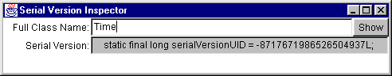
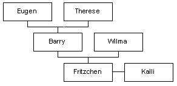

42.2 Weitere Aspekte der Serialisierung
Mit den Grundlagen aus dem vorigen Abschnitt sind bereits die wichtigsten
Prinzipien der Serialisierung in Java erklärt. Beeindruckend
ist dabei einerseits, wie das Konzept in die Klassenbibliothek eingebunden
wurde. ObjectOutputStream
und ObjectInputStream
passen in natürlicher Weise in die Stream-Hierarchie und zeigen,
wie man Streams konstruiert, die strukturierte Daten verarbeiten.
Andererseits ist es eine große Hilfe, dass Objekte ohne größere
Änderungen serialisiert werden können. Es ist lediglich
erforderlich, das Serializable-Interface
zu implementieren, um ein einfaches Objekt serialisieren zu können.
Dennoch ist das API leistungsfähig genug, auch komplexe Klassen
serialisierbar zu machen. Wir wollen in diesem Abschnitt weiterführende
Aspekte betrachten, die im Rahmen dieser Einführung noch verständlich
sind. Daneben gibt es weitere Möglichkeiten, mit denen das Serialisieren
und Deserialisieren von Klassen komplett an die speziellen Anforderungen
einer Applikation angepasst werden können. Auf diese Details
wollen wir hier aber nicht eingehen. Als vertiefende Lektüre
empfiehlt sich die »Java Object Serialization Specification«,
die seit der Version 1.2 Bestandteil der Online-Dokumentation des
JDK ist.
42.2.1 Versionierung
Applikationen, in denen Code und Daten getrennt gehalten werden, haben
grundsätzlich mit dem Problem der Inkonsistenz beider Bestandteile
zu kämpfen. Wie kann sichergestellt werden, dass die Struktur
der zu verarbeitenden Daten tatsächlich den vom Programm erwarteten
Strukturen entspricht? Dieses Problem gibt es bei praktisch allen
Datenbankanwendungen und es tritt immer dann verstärkt auf, wenn
Code und Datenstruktur getrennt geändert werden. Auch durch das
Serialisieren von Objekten haben wir das Problem, denn die Datei mit
den serialisierten Objekten enthält nur die Daten, der
zugehörige Code kommt dagegen aus dem .class-File.
Das Serialisierungs-API versucht diesem Problem mit einem Versionierungsmechanismus
zu begegnen. Dazu enthält das Interface Serializable
eine long-Konstante
serialVersionUID,
in der eine Versionskennung zur Klasse gespeichert wird. Sie wird
beim Aufruf von writeObject
automatisch berechnet und stellt einen Hashcode über die wichtigsten
Eigenschaften der Klasse dar. So gehen beispielsweise Name und Signatur
der Klasse, implementierte Interfaces sowie Methoden und Konstruktoren
in die Berechnung ein. Selbst triviale Änderungen wie das Umbenennen
oder Hinzufügen einer öffentlichen Methode verändern
die serialVersionUID.

Abbildung 42.1: Das Programm serialver
Beim Serialisieren eines Objekts wird auch die serialVersionUID
der zugehörigen Klasse mit in die Ausgabedatei geschrieben. Soll
das Objekt später deserialisiert werden, so wird die in der Datei
gespeicherte serialVersionUID
mit der aktuellen serialVersionUID
des geladenen .class-File verglichen.
Stimmen beide nicht überein, so gibt es eine Ausnahme des Typs
InvalidClassException
und der Deserialisierungsvorgang bricht ab.
Diese Art der Versionierung ist zwar recht sicher, aber auch sehr
rigoros. Schon eine kleine Änderung an der Klasse macht die serialisierten
Objekte unbrauchbar, weil sie sich nicht mehr deserialisieren lassen.
Die in Listing 42.1 vorgestellte
Klasse Time hat die serialVersionUID
-8717671986526504937L. Wird
beispielsweise eine neue Methode public
void test() hinzugefügt (die für das Deserialisieren
eigentlich völlig bedeutungslos ist), ändert sich die serialVersionUID
auf 9202005869290334574L und
weder die Datei test1.ser noch test2.ser
lassen sich zukünftig deserialisieren.
Anstatt die serialVersionUID
automatisch berechnen zu lassen, kann sie von der zu serialisierenden
Klasse auch fest vorgegeben werden. Dazu wird einfach eine Konstante
static final long serialVersionUID
definiert und mit einem vorgegebenen Wert belegt (der zum Beispiel
mit Hilfe von serialver
ermittelt wird). In diesem Fall wird die serialVersionUID
beim Aufruf von writeObject
nicht neu berechnet, sondern es wird der vorgegebene Wert verwendet.
Lässt man diese Konstante unverändert, können beliebige
Änderungen der Klasse durchgeführt werden, ohne dass readObject
beim Deserialisieren mit einer Ausnahme abbricht. Die Time-Klasse
aus Listing 42.1 hätte
dann folgendes Aussehen:
001 import java.io.*;
002
003 public class Time
004 implements Serializable
005 {
006 static final long serialVersionUID = -8717671986526504937L;
007
008 private int hour;
009 private int minute;
010
011 public Time(int hour, int minute)
012 {
013 this.hour = hour;
014 this.minute = minute;
015 }
016
017 public String toString()
018 {
019 return hour + ":" + minute;
020 }
021 }
|
Listing 42.6: Die Uhrzeitklasse mit serialVersionUID
Jetzt muss die Anwendung natürlich selbst darauf achten, dass
die durchgeführten Änderungen kompatibel sind, dass also
durch das Laden der Daten aus dem älteren Objekt keine Inkonsistenzen
verursacht werden. Dabei mögen folgende Regeln als Anhaltspunkte
dienen:
- Das Hinzufügen oder Entfernen von Methoden ist meist unkritisch.
- Das Entfernen von Membervariablen ist meist unkritisch.
- Beim Hinzufügen neuer Membervariablen muss beachtet werden,
dass diese nach dem Deserialisieren uninitialisiert sind.
- Problematisch ist es meist, Membervariablen umzubenennen, sie
auf transient
oder static
(oder umgekehrt) zu ändern, die Klasse von Serializable
auf Externalizable
(oder umgekehrt) zu ändern oder den Klassennamen zu ändern.
Solange die Änderungen kompatibel bleiben, ist also durch eine
feste serialVersionUID
sichergestellt, dass serialisierte Objekte lesbar und deserialisierbar
bleiben. Sind die Änderungen dagegen inkompatibel, sollte die
Konstante entsprechend geändert werden und die serialisierten
Daten dürfen nicht mehr verwendet werden (bzw. müssen vor
der weiteren Verwendung konvertiert werden).
42.2.2 Nichtserialisierte Membervariablen
Mitunter besitzt eine Klasse Membervariablen, die nicht serialisiert
werden sollen. Typische Beispiele sind Variablen, deren Wert sich
während des Programmlaufs dynamisch ergibt, oder solche, die
nur der temporären Kommunikation zwischen zwei oder mehr Methoden
dienen. Auch Daten, die nur im Kontext der laufenden Anwendung Sinn
machen, wie beispielsweise Filehandles, Sockets, GUI-Ressourcen oder
JDBC-Verbindungen, sollten nicht serialisiert werden; sie »verfallen«
mit dem Ende des Programms.
Membervariablen, die nicht serialisiert werden sollen, können
mit dem Attribut transient
versehen werden. Dadurch werden sie beim Schreiben des Objekts mit
writeObject
ignoriert und gelangen nicht in die Ausgabedatei. Beim Deserialisieren
werden die transienten Objekte lediglich mit dem typspezifischen Standardwert
belegt.
42.2.3 Objektreferenzen
Eine wichtige Eigenschaft des Serialisierungs-API im JDK ist, dass
auch Referenzen automatisch gesichert und rekonstruiert werden.
Besitzt ein Objekt selbst Strings, Arrays oder andere Objekte als
Membervariablen, so werden diese ebenso wie die primitiven Typen serialisiert
und deserialisiert. Da eine Objektvariable lediglich einen Verweis
auf das im Hauptspeicher allozierte Objekt darstellt, ist es wichtig,
dass diese Verweise auch nach dem Serialisieren/Deserialisieren erhalten
bleiben. Insbesondere darf ein Objekt auch dann nur einmal angelegt
werden, wenn darauf von mehr als einer Variable verwiesen wird. Auch
nach dem Deserialisieren darf das Objekt nur einmal vorhanden sein
und die verschiedenen Objektvariablen müssen auf dieses Objekt
zeigen.
Der ObjectOutputStream
hält zu diesem Zweck eine Hashtabelle, in der alle bereits serialisierten
Objekte verzeichnet werden. Bei jedem Aufruf von writeObject
wird zunächst in der Tabelle nachgesehen, ob das Objekt bereits
serialisiert wurde. Ist das der Fall, wird in der Ausgabedatei lediglich
ein Verweis auf das Objekt gespeichert. Andernfalls wird das Objekt
serialisiert und in der Hashtabelle eingetragen. Beim Deserialisieren
eines Verweises wird dieser durch einen Objektverweis auf das zuvor
deserialisierte Objekt ersetzt. Auf diese Weise werden Objekte nur
einmal gespeichert, die Objektreferenzen werden konserviert und das
Problem von Endlosschleifen durch zyklische Referenzen ist ebenfalls
gelöst.
Das folgende Programm zeigt das Speichern von Verweisen am Beispiel
eines Graphen, der Eltern-Kind-Beziehungen darstellt. Zunächst
benötigen wir dazu eine Klasse Person,
die den Namen und die Eltern einer Person speichern kann. Jeder Elternteil
wird dabei durch einen Verweis auf eine weitere Person dargestellt:
001 import java.io.*;
002
003 public class Person
004 implements Serializable
005 {
006 public String name;
007 public Person mother;
008 public Person father;
009
010 public Person(String name)
011 {
012 this.name = name;
013 }
014 }
|
Person.java |
Listing 42.7: Die Klasse Person
Der Einfachheit halber wurden alle Membervariablen als public
deklariert. Wir wollen nun ein Programm erstellen, das den folgenden
Eltern-Kind-Graph aufbaut:

Abbildung 42.2: Eltern-Kind-Graph für Serialisierungsbeispiel
Das Programm soll den Graph dann in eine Datei test3.ser
serialisieren und anschließend durch Deserialisieren wieder
rekonstruieren. Wir wollen dann überprüfen, ob alle Verweise
wiederhergestellt wurden und ob die Objekteindeutigkeit gewahrt wurde.
001 /* Listing4208.java */
002
003 import java.io.*;
004 import java.util.*;
005
006 public class Listing4208
007 {
008 public static void main(String[] args)
009 {
010 //Erzeugen der Familie
011 Person opa = new Person("Eugen");
012 Person oma = new Person("Therese");
013 Person vater = new Person("Barny");
014 Person mutter = new Person("Wilma");
015 Person kind1 = new Person("Fritzchen");
016 Person kind2 = new Person("Kalli");
017 vater.father = opa;
018 vater.mother = oma;
019 kind1.father = kind2.father = vater;
020 kind1.mother = kind2.mother = mutter;
021
022 //Serialisieren der Familie
023 try {
024 FileOutputStream fs = new FileOutputStream("test3.ser");
025 ObjectOutputStream os = new ObjectOutputStream(fs);
026 os.writeObject(kind1);
027 os.writeObject(kind2);
028 os.close();
029 } catch (IOException e) {
030 System.err.println(e.toString());
031 }
032
033 //Rekonstruieren der Familie
034 kind1 = kind2 = null;
035 try {
036 FileInputStream fs = new FileInputStream("test3.ser");
037 ObjectInputStream is = new ObjectInputStream(fs);
038 kind1 = (Person)is.readObject();
039 kind2 = (Person)is.readObject();
040 //Überprüfen der Objekte
041 System.out.println(kind1.name);
042 System.out.println(kind2.name);
043 System.out.println(kind1.father.name);
044 System.out.println(kind1.mother.name);
045 System.out.println(kind2.father.name);
046 System.out.println(kind2.mother.name);
047 System.out.println(kind1.father.father.name);
048 System.out.println(kind1.father.mother.name);
049 //Name des Vaters ändern
050 kind1.father.name = "Fred";
051 //Erneutes Überprüfen der Objekte
052 System.out.println("---");
053 System.out.println(kind1.name);
054 System.out.println(kind2.name);
055 System.out.println(kind1.father.name);
056 System.out.println(kind1.mother.name);
057 System.out.println(kind2.father.name);
058 System.out.println(kind2.mother.name);
059 System.out.println(kind1.father.father.name);
060 System.out.println(kind1.father.mother.name);
061 is.close();
062 } catch (ClassNotFoundException e) {
063 System.err.println(e.toString());
064 } catch (IOException e) {
065 System.err.println(e.toString());
066 }
067 }
068 }
|
Listing4208.java |
Listing 42.8: Serialisieren von Objekten und Referenzen
Das Programm erzeugt in den Zeilen 011
bis 020 zunächst den in
Abbildung 42.2 abgebildeten
Verwandtschaftsgraphen und serialisiert ihn anschließend in
die Datei test3.ser. Bemerkenswert ist
hier vor allem, dass wir lediglich die beiden Kinder kind1
und kind2 explizit serialisieren.
Da alle anderen Objekte über Verweise von den Kindern aus zu
erreichen sind, ist es nicht nötig, diese separat mit writeObject
zu speichern.
In Zeile 034 setzen wir die beiden
Kindvariablen auf null,
um zu beweisen, dass sie ausschließlich durch das nachfolgende
Deserialisieren korrekt gesetzt werden. Nun werden kind1
und kind2 deserialisiert und
in den Zeilen 041 bis 048
wird der komplette Verwandtschaftsgraph ausgegeben. An der Ausgabe
des Programms können wir erkennen, dass tatsächlich alle
Objekte rekonstruiert und die Verweise darauf korrekt gesetzt wurden:
Fritzchen
Kalli
Barny
Wilma
Barny
Wilma
Eugen
Therese
---
Fritzchen
Kalli
Fred
Wilma
Fred
Wilma
Eugen
Therese
Der zweite Block von Ausgabeanweisungen (in den Zeilen 052
bis 060) zeigt, dass auch die
Objekteindeutigkeit gewahrt wurde. Dazu haben wir nämlich in
Zeile 050 den Namen des Vaterobjekts
von kind1 auf »Fred«
geändert. Wie im zweiten Teil der Ausgabe des Programms zu erkennen
ist, wurde damit auch der Name des Vaters des zweiten Kinds auf »Fred«
geändert und wir können sicher sein, dass es sich um ein
und dasselbe Objekt handelt.
 |
|
|
|
Obwohl (oder gerade weil) das Serialisieren von Objektgraphen in aller
Regel sehr bequem und vollautomatisch abläuft, seien an dieser
Stelle einige Warnungen ausgesprochen:
- Einerseits kann es passieren, dass mehr Objekte als erwartet serialisiert
werden. Insbesondere bei komplexen Objektbeziehungen kann es sein,
dass an dem zu serialisierenden Objekt indirekt viele weitere Objekte
hängen und beim Serialisieren wesentlich mehr Objekte gespeichert
werden, als erwartet wurde. Das kostet unnötig Zeit und Speicher.
- Durch das Zwischenspeichern der bereits serialisierten Objekte
in ObjectOutputStream
werden viele Verweise auf Objekte gehalten, die sonst möglicherweise
für das Programm unerreichbar wären. Da der Garbage Collector
diese Objekte nicht freigibt, kann es beim Serialisieren einer großen
Anzahl von Objekten zu Speicherproblemen kommen. Mit Hilfe der Methode
reset
kann der ObjectOutputStream
in den Anfangszustand versetzt werden; alle bereits bekannten Objektreferenzen
werden »vergessen«. Wird ein bereits serialisiertes Objekt
danach noch einmal gespeichert, wird kein Verweis, sondern das Objekt
selbst noch einmal geschrieben.
- Wenn ein bereits serialisiertes Objekt verändert und
anschließend erneut serialisiert wird, bleibt die Veränderung
beim Deserialisieren unsichtbar, denn in der Ausgabedatei wird lediglich
ein Verweis auf das Originalobjekt gespeichert.
|
|
|
|
42.2.4 Serialisieren von Collections
Neben selbst geschriebenen Klassen sind auch viele der Standardklassen
des JDK serialisierbar, insbesondere die meisten Collection-Klassen.
Um beispielsweise alle Daten einer Liste oder einer Map persistent
zu speichern, genügt ein einfaches Serialisieren nach obigem
Muster. Voraussetzung ist allerdings, dass auch die Elemente der Collection
serialisierbar sind, andernfalls gibt es eine NotSerializableException.
Auch die Wrapper-Klassen zu den Basistypen (siehe Abschnitt 11.2)
sind standardmäßig serialisierbar und können damit
problemlos als Objekte in serialisierbaren Collections verwendet werden.
Im nächsten Abschnitt stellen wir eine kleine Anwendung für
das Serialisieren von Hashtabellen vor.